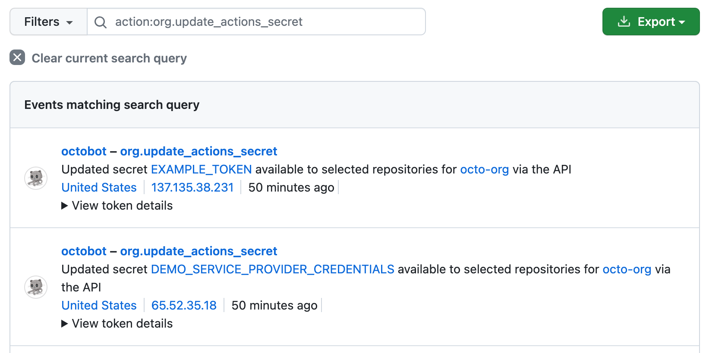

Security practices for writing workflows and using GitHub Actions features.
Find information about security best practices when you are writing workflows and using GitHub Actions security features.
Because there are multiple ways a secret value can be transformed, automatic redaction is not guaranteed. Adhere to the following best practices to limit risks associated with secrets.
GITHUB_TOKEN by accessing it from the github.token context. For more information, see Contexts reference. You should therefore make sure that the GITHUB_TOKEN is granted the minimum required permissions. It's good security practice to set the default permission for the GITHUB_TOKEN to read access only for repository contents. The permissions can then be increased, as required, for individual jobs within the workflow file. For more information, see Use GITHUB_TOKEN for authentication in workflows.::add-mask::VALUE. This causes the value to be treated as a secret and redacted from logs. For more information about masking data, see Workflow commands for GitHub Actions.STDOUT and STDERR, and secrets might subsequently end up in error logs. As a result, it is good practice to manually review the workflow logs after testing valid and invalid inputs. For information on how to clean up workflow logs that may unintentionally contain sensitive data, see Using workflow run logs.Recommended approaches for mitigating the risk of script injection in your workflows:
The recommended approach is to create a JavaScript action that processes the context value as an argument. This approach is not vulnerable to the injection attack, since the context value is not used to generate a shell script, but is instead passed to the action as an argument:
uses: fakeaction/checktitle@v3
with:
title: ${{ github.event.pull_request.title }}
For inline scripts, the preferred approach to handling untrusted input is to set the value of the expression to an intermediate environment variable. The following example uses Bash to process the github.event.pull_request.title value as an environment variable:
- name: Check PR title
env:
TITLE: ${{ github.event.pull_request.title }}
run: |
if [[ "$TITLE" =~ ^octocat ]]; then
echo "PR title starts with 'octocat'"
exit 0
else
echo "PR title did not start with 'octocat'"
exit 1
fi
In this example, the attempted script injection is unsuccessful, which is reflected by the following lines in the log:
env:
TITLE: a"; ls $GITHUB_WORKSPACE"
PR title did not start with 'octocat'
With this approach, the value of the ${{ github.event.pull_request.title }} expression is stored in memory and used as a variable, and doesn't interact with the script generation process. In addition, consider using double quote shell variables to avoid word splitting, but this is one of many general recommendations for writing shell scripts, and is not specific to GitHub Actions.
Code scanning allows you to find security vulnerabilities before they reach production. GitHub provides workflow templates for code scanning. You can use these suggested workflows to construct your code scanning workflows, instead of starting from scratch. GitHub's workflow, the CodeQL analysis workflow, is powered by CodeQL. There are also third-party workflow templates available.
For more information, see About code scanning and Configuring advanced setup for code scanning.
To help mitigate the risk of an exposed token, consider restricting the assigned permissions. For more information, see Use GITHUB_TOKEN for authentication in workflows.
The individual jobs in a workflow can interact with (and compromise) other jobs. For example, a job querying the environment variables used by a later job, writing files to a shared directory that a later job processes, or even more directly by interacting with the Docker socket and inspecting other running containers and executing commands in them.
This means that a compromise of a single action within a workflow can be very significant, as that compromised action would have access to all secrets configured on your repository, and may be able to use the GITHUB_TOKEN to write to the repository. Consequently, there is significant risk in sourcing actions from third-party repositories on GitHub. For information on some of the steps an attacker could take, see Secure use reference.
You can help mitigate this risk by following these good practices:
Pin actions to a full-length commit SHA
Pinning an action to a full-length commit SHA is currently the only way to use an action as an immutable release. Pinning to a particular SHA helps mitigate the risk of a bad actor adding a backdoor to the action's repository, as they would need to generate a SHA-1 collision for a valid Git object payload. When selecting a SHA, you should verify it is from the action's repository and not a repository fork.
For an example of using a full-length commit SHA in a workflow, see Using pre-written building blocks in your workflow.
GitHub offers policies at the repository and organization level to require actions to be pinned to a full-length commit SHA:
Audit the source code of the action
Ensure that the action is handling the content of your repository and secrets as expected. For example, check that secrets are not sent to unintended hosts, or are not inadvertently logged.
Pin actions to a tag only if you trust the creator
Although pinning to a commit SHA is the most secure option, specifying a tag is more convenient and is widely used. If you’d like to specify a tag, then be sure that you trust the action's creators. The ‘Verified creator’ badge on GitHub Marketplace is a useful signal, as it indicates that the action was written by a team whose identity has been verified by GitHub. Note that there is risk to this approach even if you trust the author, because a tag can be moved or deleted if a bad actor gains access to the repository storing the action.
The same principles described above for using third-party actions also apply to using third-party workflows. You can help mitigate the risks associated with reusing workflows by following the same good practices outlined above. For more information, see Reuse workflows.
GitHub provides many features to make your code more secure. You can use GitHub's built-in features to understand the actions your workflows depend on, ensure you are notified about vulnerabilities in the actions you consume, or automate the process of keeping the actions in your workflows up to date. If you publish and maintain actions, you can use GitHub to communicate with your community about vulnerabilities and how to fix them. For more information about security features that GitHub offers, see GitHub security features.
CODEOWNERS to monitor changesYou can use the CODEOWNERS feature to control how changes are made to your workflow files. For example, if all your workflow files are stored .github/workflows, you can add this directory to the code owners list, so that any proposed changes to these files will first require approval from a designated reviewer.
For more information, see About code owners.
If your GitHub Actions workflows need to access resources from a cloud provider that supports OpenID Connect (OIDC), you can configure your workflows to authenticate directly to the cloud provider. This will let you stop storing these credentials as long-lived secrets and provide other security benefits. For more information, see OpenID Connect.
Note
Support for custom claims for OIDC is unavailable in AWS.
You can use Dependabot to ensure that references to actions and reusable workflows used in your repository are kept up to date. Actions are often updated with bug fixes and new features to make automated processes faster, safer, and more reliable. Dependabot takes the effort out of maintaining your dependencies as it does this automatically for you. For more information, see Keeping your actions up to date with Dependabot and About Dependabot security updates.
You can choose to allow or prevent GitHub Actions workflows from creating or approving pull requests. Allowing workflows, or any other automation, to create or approve pull requests could be a security risk if the pull request is merged without proper oversight.
For more information on how to configure this setting, see Disabling or limiting GitHub Actions for your organization, and Managing GitHub Actions settings for a repository.
Code scanning can automatically detect and suggest improvements for common vulnerable patterns used in GitHub Actions workflows.
For more information on how to enable code scanning, see Configuring default setup for code scanning.
Scorecards is an automated security tool that flags risky supply chain practices. You can use the Scorecards action and workflow template to follow best security practices. Once configured, the Scorecards action runs automatically on repository changes, and alerts developers about risky supply chain practices using the built-in code scanning experience. The Scorecards project runs a number of checks, including script injection attacks, token permissions, and pinned actions.
GitHub-hosted runners take measures to help you mitigate security risks.
For GitHub-hosted runners created from images maintained by GitHub, you can view a software bill of materials (SBOM) to see what software was pre-installed on the runner. You can provide your users with the SBOM which they can run through a vulnerability scanner to validate if there are any vulnerabilities in the product. If you are building artifacts, you can include this SBOM in your bill of materials for a comprehensive list of everything that went into creating your software.
SBOMs are available for Ubuntu, Windows, and macOS runner images maintained by GitHub. You can locate the SBOM for your build in the release assets at https://github.com/actions/runner-images/releases. An SBOM with a filename in the format of sbom.IMAGE-NAME.json.zip can be found in the attachments of each release.
For third-party images, such as the images for ARM-powered runners, you can find details of the software that's included in the image in the actions/partner-runner-images repository.
GitHub-hosted runners are provisioned with an etc/hosts file that blocks network access to various cryptocurrency mining pools and malicious sites. Hosts such as MiningMadness.com and cpu-pool.com are rerouted to localhost so that they do not present a significant security risk. For more information, see GitHub-hosted runners.
GitHub-hosted runners execute code within ephemeral and clean isolated virtual machines, meaning there is no way to persistently compromise this environment, or otherwise gain access to more information than was placed in this environment during the bootstrap process.
Self-hosted runners for GitHub do not have guarantees around running in ephemeral clean virtual machines, and can be persistently compromised by untrusted code in a workflow.
As a result, self-hosted runners should almost never be used for public repositories on GitHub, because any user can open pull requests against the repository and compromise the environment. Similarly, be cautious when using self-hosted runners on private or internal repositories, as anyone who can fork the repository and open a pull request (generally those with read access to the repository) are able to compromise the self-hosted runner environment, including gaining access to secrets and the GITHUB_TOKEN which, depending on its settings, can grant write access to the repository. Although workflows can control access to environment secrets by using environments and required reviews, these workflows are not run in an isolated environment and are still susceptible to the same risks when run on a self-hosted runner.
Organization owners can choose which repositories are allowed to create repository-level self-hosted runners.
For more information, see Disabling or limiting GitHub Actions for your organization.
When a self-hosted runner is defined at the organization or enterprise level, GitHub can schedule workflows from multiple repositories onto the same runner. Consequently, a security compromise of these environments can result in a wide impact. To help reduce the scope of a compromise, you can create boundaries by organizing your self-hosted runners into separate groups. You can restrict what organizations and repositories can access runner groups. For more information, see Managing access to self-hosted runners using groups.
You should also consider the environment of the self-hosted runner machines:
Some customers might attempt to partially mitigate these risks by implementing systems that automatically destroy the self-hosted runner after each job execution. However, this approach might not be as effective as intended, as there is no way to guarantee that a self-hosted runner only runs one job. Some jobs will use secrets as command-line arguments which can be seen by another job running on the same runner, such as ps x -w. This can lead to secret leaks.
To improve runner registration security, you can use the REST API to create ephemeral, just-in-time (JIT) runners. These self-hosted runners perform at most one job before being automatically removed from the repository, organization, or enterprise. For more information about configuring JIT runners, see REST API endpoints for self-hosted runners.
Note
Re-using hardware to host JIT runners can risk exposing information from the environment. Use automation to ensure the JIT runner uses a clean environment. For more information, see Self-hosted runners reference.
Once you have the config file from the REST API response, you can pass it to the runner at startup.
./run.sh --jitconfig ${encoded_jit_config}
A self-hosted runner can be added to various levels in your GitHub hierarchy: the enterprise, organization, or repository level. This placement determines who will be able to manage the runner:
Centralized management:
Decentralized management:
If you are using GitHub Actions to deploy to a cloud provider, or intend to use HashiCorp Vault for secret management, then it's recommended that you consider using OpenID Connect to create short-lived, well-scoped access tokens for your workflow runs. For more information, see OpenID Connect.
You can use the security log to monitor activity for your user account and the audit log to monitor activity in your organization. The security and audit log records the type of action, when it was run, and which personal account performed the action.
For example, you can use the audit log to track the org.update_actions_secret event, which tracks changes to organization secrets.

For the full list of events that you can find in the audit log for each account type, see the following articles:
You can use the dependency graph to explore the actions that the workflows in your repository use. The dependency graph is a summary of the manifest and lock files stored in a repository. It also recognizes files in ./github/workflows/ as manifests, which means that any actions or workflows referenced using the syntax jobs[*].steps[*].uses or jobs.<job_id>.uses will be parsed as dependencies.
The dependency graph shows the following information about actions used in workflows:
In the dependency graph, dependencies are automatically sorted by vulnerability severity. If any of the actions you use have security advisories, they will display at the top of the list. You can navigate to the advisory from the dependency graph and access instructions for resolving the vulnerability.
The dependency graph is enabled for public repositories, and you can choose to enable it on private repositories. For more information about using the dependency graph, see Exploring the dependencies of a repository.
For actions available on the marketplace, GitHub reviews related security advisories and then adds those advisories to the GitHub Advisory Database. You can search the database for actions that you use to find information about existing vulnerabilities and instructions for how to fix them. To streamline your search, use the GitHub Actions filter in the GitHub Advisory Database.
You can set up your repositories so that you:
You can use Dependabot to monitor the actions in your workflows and enable Dependabot alerts to notify you when an action you use has a reported vulnerability. Dependabot performs a scan of the default branch of the repositories where it is enabled to detect insecure dependencies. Dependabot generates Dependabot alerts when a new advisory is added to the GitHub Advisory Database or when an action you use is updated.
Note
Dependabot only creates alerts for vulnerable actions that use semantic versioning and will not create alerts for actions pinned to SHA values.
You can enable Dependabot alerts for your personal account, for a repository, or for an organization. For more information, see Configuring Dependabot alerts.
You can view all open and closed Dependabot alerts and corresponding Dependabot security updates in your repository's Dependabot tab. For more information, see Viewing and updating Dependabot alerts.
When you open pull requests to update your workflows, it is good practice to use dependency review to understand the security impact of changes you've made to the actions you use. Dependency review helps you understand dependency changes and the security impact of these changes at every pull request. It provides an easily understandable visualization of dependency changes with a rich diff on the "Files Changed" tab of a pull request. Dependency review informs you of:
If any of the changes you made to your workflows are flagged as vulnerable, you can avoid adding them to your project or update them to a secure version.
For more information about dependency review, see About dependency review.
The "dependency review action" refers to the specific action that can report on differences in a pull request within the GitHub Actions context. See dependency-review-action. You can use the dependency review action in your repository to enforce dependency reviews on your pull requests. The action scans for vulnerable versions of dependencies introduced by package version changes in pull requests, and warns you about the associated security vulnerabilities. This gives you better visibility of what's changing in a pull request, and helps prevent vulnerabilities being added to your repository. For more information, see About dependency review.
You can use Dependabot to ensure that references to actions and reusable workflows used in your repository are kept up to date. Actions are often updated with bug fixes and new features to make automated processes faster, safer, and more reliable. Dependabot takes the effort out of maintaining your dependencies as it does this automatically for you. For more information, see Keeping your actions up to date with Dependabot and About Dependabot security updates.
The following features can automatically update the actions in your workflows.
Note
actions/checkout@v5 or actions/checkout@<commit> . Dependabot will ignore actions or reusable workflows referenced locally (for example, ./.github/actions/foo.yml).actions/checkout@<commit> #<tag or link> or actions/checkout@<tag> #<tag or link>.docker:// syntax aren't supported.git" in Dependabot options reference.For information on how to configure Dependabot version updates, see Configuring Dependabot version updates.
For information on how to configure Dependabot security updates, see Configuring Dependabot security updates.
GitHub enables collaboration between people who publish and maintain actions and vulnerability reporters in order to promote secure coding. Repository security advisories allow maintainers of public repositories to privately discuss and fix a security vulnerability in a project. After collaborating on a fix, repository maintainers can publish the security advisory to publicly disclose the security vulnerability to the project's community. By publishing security advisories, repository maintainers make it easier for their community to update package dependencies and research the impact of the security vulnerabilities.
If you are someone who maintains an action that is used in other projects, you can use the following GitHub features to enhance the security of the actions you've published.